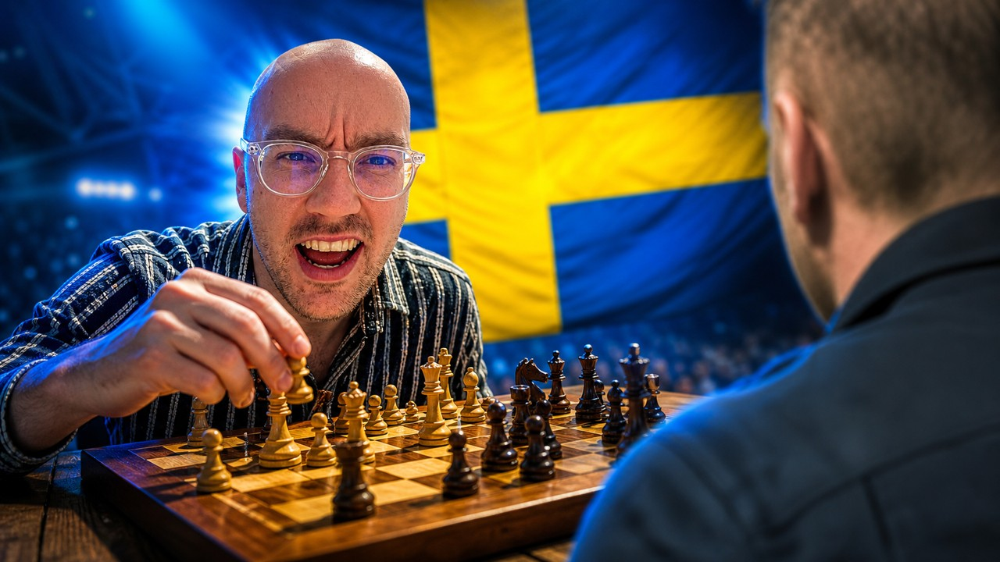
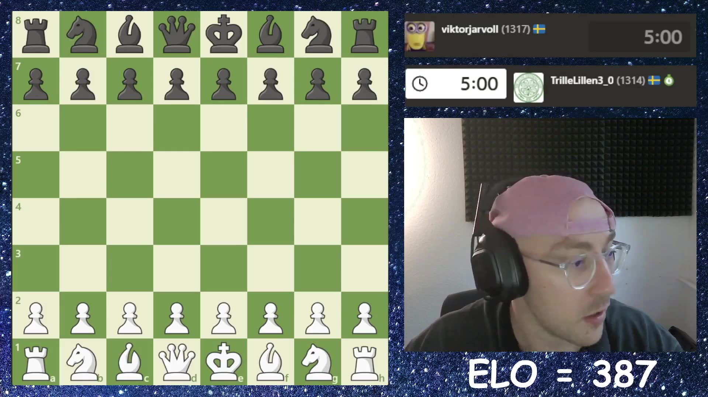
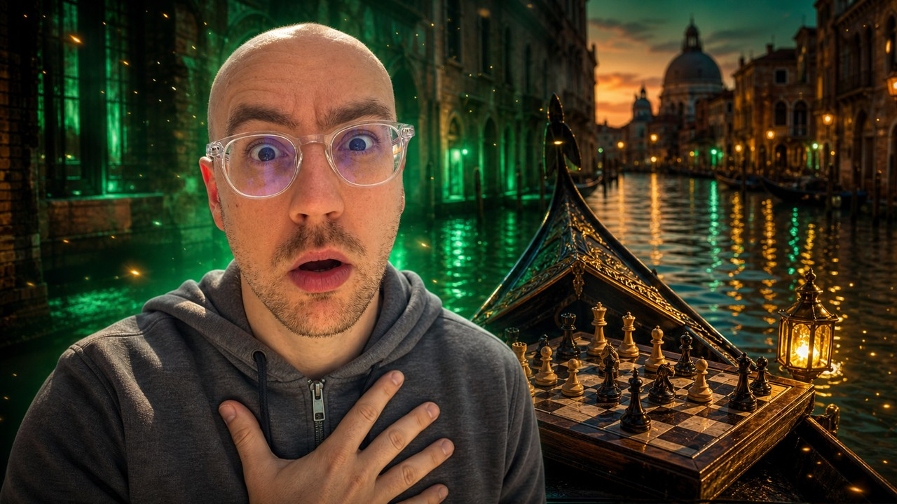

8 long-forms · 3 shorts. Nothing is uploaded until you approve. Tap a thumbnail to play. Your notes & buttons are saved to the pipeline the moment you tap.


1:02:51▶"This might be next on the agenda" -- low elo chess on the road to 1000 ELO. This chess.com game against Ishmael and Mahoo turned on a painful blunder, the kind of beginner chess lesson that makes the climb to 1000 ELO feel very real. This is chess for beginners in real time: chess tactics, chess blunders, chess strategy, and the messy lessons that come from low elo chess on chess.com. 🔔 Subscribe to follow the climb: https://www.youtube.com/@Detective-48 #chess #roadto1000elo #chesscom #chessblunders #lowelochess
"It like completely Totally addicted to" -- low elo chess on the road to 1000 ELO. This low elo chess game against Algeria built toward one decisive checkmate, with every tactic and panic move pushing the road to 1000 ELO forward. ⏱️ CHAPTERS 0:39 Game 1 1:03 The blunder -- I Will just take as well Do 4:50 The blunder -- Literally just forcing pieces into the match 5:55 The blunder -- You can see that nicely now I've updated 8:26 The mate threat 8:49 The blunder -- See a cactus in your portfolio 9:42 The mate threat -- It like completely Totally addicted to 9:47 The checkmate -- Be able to find the time This is chess for beginners in real time: chess tactics, chess blunders, chess strategy, and the messy lessons that come from low elo chess on chess.com. 🔔 Subscribe to follow the climb: https://www.youtube.com/@Detective-48 #chess #roadto1000elo #chesscom #chessblunders #lowelochess

8:48▶"Interesting place from this guy though" -- low elo chess on the road to 1000 ELO. This chess.com game against Algeria turned on a painful blunder, the kind of beginner chess lesson that makes the climb to 1000 ELO feel very real. ⏱️ CHAPTERS 0:00 Game 1 2:09 The blunder -- Does spot the threat Which 4:49 The blunder 5:15 The blunder -- This popping up here 5:41 The blunder -- Moved he's spotted it i'm marching the board 5:44 The blunder -- Spotted it i'm marching the board then 5:58 The blunder -- I think he's blunder the piece there 6:29 The blunder 7:25 The mate threat -- Interesting place from this guy though 7:51 The blunder -- Really know Did look at this 8:00 The mate threat I'm learning how to play chess in public -- every blunder, every checkmate, every lesson for beginner chess players trying to climb. New games on the road to 1000 ELO every day. 🔔 Subscribe to follow the climb: https://www.youtube.com/@Detective-48 #chess #roadto1000elo #chesscom #chessblunders #lowelochess
"Suddenly back into the game i would have nowhere" -- low elo chess on the road to 1000 ELO. This low elo chess game against Algeria built toward one decisive checkmate, with every tactic and panic move pushing the road to 1000 ELO forward. ⏱️ CHAPTERS 0:00 Game 1 8:45 The blunder -- I've got a lot to learn Interesting 9:05 The blunder 10:17 The blunder -- Love the play you've spotted 11:11 The blunder 11:21 The brilliant move -- Blended No I've hit them with a huge 11:45 The blunder -- Blunder I was just tunnel vision on that 11:47 The blunder -- Just tunnel vision on that king and i 12:49 The checkmate -- Suddenly back into the game i would have 12:57 The blunder 13:11 The checkmate Follow the climb as I learn chess one game at a time -- how to play chess for beginners, what not to blunder, and how every tactic changes the road to 1000 ELO. 🔔 Subscribe to follow the climb: https://www.youtube.com/@Detective-48 #chess #roadto1000elo #chesscom #chessblunders #lowelochess
"Wow what's that let's have a look at that move whoa whoa" -- low elo chess on the road to 1000 ELO. This low elo chess game against Algeria had the usual chaos: tactics, blunders, pressure, and another lesson on the road to 1000 ELO. ⏱️ CHAPTERS 0:00 Game 1 I'm learning how to play chess in public -- every blunder, every checkmate, every lesson for beginner chess players trying to climb. New games on the road to 1000 ELO every day. 🔔 Subscribe to follow the climb: https://www.youtube.com/@Detective-48 #chess #roadto1000elo #chesscom #chessblunders #lowelochess
"Want to hold the D file okay" -- low elo chess on the road to 1000 ELO. This chess.com game against Algeria turned on a painful blunder, the kind of beginner chess lesson that makes the climb to 1000 ELO feel very real. ⏱️ CHAPTERS 0:00 Game 1 0:52 The blunder 3:40 Game 2 3:47 The big moment -- Opening algeo come on 6:47 The blunder -- Interesting he's actually I 7:20 The blunder 7:23 The blunder 7:25 The big moment 8:21 The blunder 9:00 The blunder -- All out wipe I don't want to 9:38 The blunder -- Don't think it's gonna be 10:22 The blunder -- I play there he goes you can't go 11:13 The mate threat -- Want to hold the D file okay Every upload is a beginner chess lesson from the board: the tactics I missed, the blunders I made, and the chess.com games pushing me toward 1000 ELO. 🔔 Subscribe to follow the climb: https://www.youtube.com/@Detective-48 #chess #roadto1000elo #chesscom #chessblunders #lowelochess
"You've cast so that's looking good over there for you I'm hitting" -- low elo chess on the road to 1000 ELO. This chess.com game against Algeria turned on a painful blunder, the kind of beginner chess lesson that makes the climb to 1000 ELO feel very real. ⏱️ CHAPTERS 0:00 Game 1 3:46 The blunder 4:21 The blunder -- Will miss Calculate as 5:24 The blunder -- You've cast so that's looking good over there 6:34 The blunder -- Now I get one back you take this This is chess for beginners in real time: chess tactics, chess blunders, chess strategy, and the messy lessons that come from low elo chess on chess.com. 🔔 Subscribe to follow the climb: https://www.youtube.com/@Detective-48 #chess #roadto1000elo #chesscom #chessblunders #lowelochess
"You blended your queen for" -- low elo chess on the road to 1000 ELO. This low elo chess game against Algeria built toward one decisive checkmate, with every tactic and panic move pushing the road to 1000 ELO forward. ⏱️ CHAPTERS 0:00 Game 1 0:26 Game 2 0:53 The mate threat -- You blended your queen for 1:16 Game 3 5:05 The blunder -- Is okay I gotta get active I'm getting 5:48 The big moment -- Whoa it's getting his queen active 6:02 The mate threat -- It's just relentlessly attacking my king now and 6:13 The blunder -- Mile away I mean look at this 6:21 The mate threat -- Next he's coming from 8:02 Game 4 9:17 The blunder -- Up and show off start taking me apart 9:21 The blunder -- Up and show off start taking me apart 9:24 The blunder -- Taking me apart instantly whoa you're pre -moving I'm learning how to play chess in public -- every blunder, every checkmate, every lesson for beginner chess players trying to climb. New games on the road to 1000 ELO every day. 🔔 Subscribe to follow the climb: https://www.youtube.com/@Detective-48 #chess #roadto1000elo #chesscom #chessblunders #lowelochess